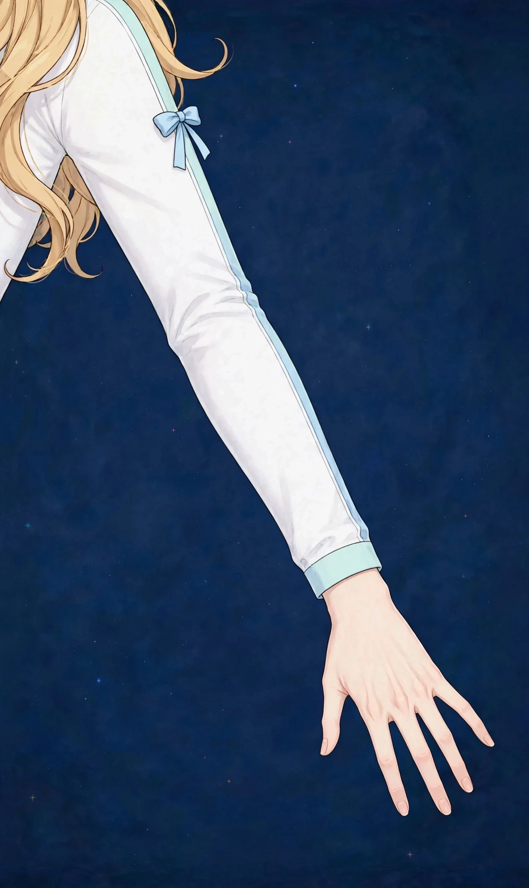

梅田で抱っこの腰・腕の疲れケア｜子どもの抱っこで重い腰と腕に疲労・張り

子どもを抱っこする時間は、幸せであると同時に、体には確実な負担です。抱き上げるたびに腰が重く、前腕がだるく、気づけば片側の腕ばかりで支えている——抱っこの疲れは、腰と腕に同時にたまるのが特徴です。
抱っこの腰・腕の疲れはどんな状態か
抱っこによる腰・腕の疲れは、子どもの体重を腕で支え、腰でバランスを取る姿勢が繰り返されることで、腰まわりと前腕・上腕に負担が蓄積した状態です。抱っこ中だけでなく、抱き上げ・下ろすの動作のたびに腰への引っ張りが加わります。
ポイントは、負担が片側に偏りやすいことです。利き腕側で支える、腰骨の上に乗せて抱く、といったクセがつくと、左右差のある張りとして残ります。また、子どもは月齢とともに重くなるため、負担は少しずつ増えていくのに、体はその変化に気づきにくいものです。
こんなサインはありませんか？ — 抱っこの腰・腕の疲れのチェックリスト
- 抱っこしたあとに腰が重く、伸ばしたくなる
- 前腕から肘にかけてだるさが残る
- いつも同じ側の腕で抱いている
- 腰骨の上に乗せて抱くことが多い
- 抱き上げるときに腰に違和感がある
- 授乳や寝かしつけで腕が固まる感じがある
- 子どもを下ろしたあとも腕の重さが抜けない
- 肩や背中まで張りが広がってきた
当てはまる項目が多いほど、負担がたまりやすい生活が続いている可能性があります。次の「要因」と見比べて、どこに負担が集まっているか確かめてみてください。
抱っこの腰・腕の疲れにつながりやすい要因
- 抱っこの片側偏り：いつも同じ腕・同じ腰で支えると、張りは片側に集中します。左右差のある疲れは、抱き方のクセのサインです。
- 腰骨に乗せる抱き方：腰を横に出して骨盤の上に乗せる抱き方は楽に感じますが、腰と骨盤に偏った負担をかけ続けます。長時間になるほど腰への影響が大きくなります。
- 抱き上げ動作の繰り返し：床やベビーカーからの抱き上げは、腰を曲げた姿勢で重さを受けます。一日に何度も繰り返す動作ほど、腰への蓄積が進みます。
- 前腕の使いすぎ：子どもの体を支える前腕は、抱っこ中ずっと働き続けます。手首から肘にかけてのだるさは、前腕の疲労の表れです。
- 寝かしつけの姿勢：抱っこで寝かしつける時間は、腕も腰も動けないまま緊張が続きます。寝たあとにそっと下ろす動作まで含めて、負担は長く続きます。
- 自分のケアの後回し：子どもの世話が優先になり、自分の疲れのケアは後回しになりがちです。小さな蓄積を見逃し続けることが、慢性的な重さにつながります。
図1｜抱っこで負担が集まる腕の部位

東洋医学から見た考え方
東洋医学では、腕の疲れは経絡の巡りの滞りと捉えます。腕には多くの経絡が通り、手先まで巡らせることで全身の巡りにもつながると考えます。抱っこで腕を使い続ける生活は、この見立てでは上半身の巡りを消耗しやすい過ごし方です。
前腕の外側を通る大腸経や、腕の内側を通る経絡のラインに沿って、施術では腕全体を丁寧にほぐします。腰については骨盤まわりとのバランスも含めて確認し、抱っこの負担が集まる場所をケアします。
代表的なツボ
抱っこの腕の疲れのケアでよく挙げられる、腕のツボを紹介します。手が届きやすく、子どもの昼寝中などの短い時間にも取り入れやすい場所です。
図2｜腕のツボの位置
おすすめ施術
美容整体＋オイルマッサージ
腰・腕・肩を中心に、抱っこの負担が集まる場所を丁寧にほぐします。左右差のある張りを確認しながら、抱き方のクセも一緒に見ていきます。
進め方は、まず腰と骨盤まわりのバランスを確認し、腕は前腕から上腕、肩までを一続きにほぐす流れです。授乳や寝かしつけの姿勢で固まりやすい場所も含めてケアします。
お子さんの月齢や抱っこの頻度に合わせて、負担を減らす抱き方の工夫もお伝えします。夕方以降の営業のため、家族に子どもをお願いできる日のご褒美時間としても使えます。
抱っこの疲れは「休めば取れる疲れ」とは違い、毎日同じ動作が重なることで蓄積します。週単位で見たときに「先週より腰が重い」と感じるようなら、ケアを取り入れる合図です。当店では、抱っこの時期に合わせた体の使い方も含めてお伝えします。
自宅でできるセルフケア
抱っこのセルフケアは「前腕をほぐす・腰を反らす・左右を替える」の組み合わせが基本です。腰に強い痛みや脚へのしびれがある場合は、サロンでのケアの前に医療機関にご相談ください。
- 1．前腕のセルフほぐし反対側の手の親指で、前腕を手首から肘へ向けてほぐします。左右1分ずつ。抱っこの合間の短い時間でも行えます。
- 2．立ったまま腰伸ばし両手を腰に当て、ゆっくり上体を後ろへ反らして5秒。抱っこで前に丸まった腰をリセットする動きです。
- 3．抱っこの左右交代意識して抱く側を替えます。偏りを減らすことが、片側だけの張りを防ぐ基本になります。
- 4．抱っこ紐の調整抱っこ紐は肩と腰に負担が分散するよう、位置と締め具合を時々見直します。体の変化に合わせて調整し直すことも大切です。
図3｜セルフケア「前腕のセルフほぐし」の手順
場面別の注意
月齢が上がってきたら
子どもの体重が増える時期は、負担の増え方に体がついていきにくい時期です。抱き方の見直しと、ケアの頻度の相談どきでもあります。
外出先での抱っこ
ベビーカーなしの外出は抱っこ時間が長くなります。帰宅後は前腕のほぐしと腰伸ばしをセットで行ってください。
上の子と下の子の世話が重なる時期
抱っこと家事が重なる時期は、腕と腰の両方に負担が集中します。短い時間でも自分のケアを予定に入れることが大切です。
受診の目安
次のような場合は、サロンでのケアの前に医療機関への受診をおすすめします。
- 腰の痛みに加えて、脚にしびれがある
- 手首の痛みが強く、物を持つのがつらい
- 抱き上げのときに腰に激しい痛みが走った
- 産後の腰の痛みが日に日に強くなっている
- 発熱を伴う腰や関節の痛みがある
当店は医療機関ではなく、診断は行いません。迷うときは、まずかかりつけの医療機関にご相談ください。
よくある質問
Q．産後の体型のページとの違いは？
産後の体型のページは体型や骨盤まわりの見た目を中心に、このページは抱っこという日常動作による腰・腕の疲労に絞って解説しています。抱っこのたびに疲れを感じる方は、こちらのページが合います。
Q．子ども連れでも行けますか？
施術はレンタルサロンの個室で行いますが、お子さまをお預かりする設備はありません。ご家族に見てもらえる時間帯でのご来店をお願いしています。営業は17:00〜22:00です。
Q．授乳中でも施術を受けられますか？
うつ伏せの施術が中心のため、体の状態によっては姿勢を調整します。気になる点は予約時にLINEでご相談ください。
Q．抱っこ紐の選び方も相談できますか？
製品の推奨は行っていませんが、肩と腰への負担の分散という観点で、今お使いの抱っこ紐の付け方の見直しポイントはお伝えできます。
関連するお悩みページ
関連する経絡ページ
ご予約
ステラポラリス（大阪・梅田／女性専用）｜オイルマッサージ 90分 10,000円｜月〜土 17:00〜22:00・完全予約制
ご予約はLINE公式アカウントで受け付けています。希望の日時と、気になる場所を送ってください。